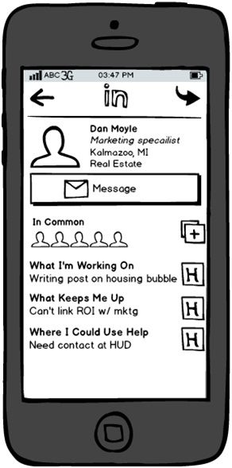

Answers
Google shut down a location sharing service called Google Latitude on August 2013. How would you redesign and re-launch a location-sharing app?
CANDIDATE: Do you mind if I ask some clarifying questions?
INTERVIEWER: Sure.
CANDIDATE: My understanding is that Google Latitude allowed you to broadcast your location to your friends. And your friends could monitor your location, on a map, at all times.
INTERVIEWER: Yes, that’s the basic gist.
CANDIDATE: Why did Google Latitude fail?
INTERVIEWER: Bad PR and poor adoption. The running joke was that the only people who liked the feature were jealous spouses and significant others. In other words, privacy was a big obstacle.
CANDIDATE: Why is Google interested in rebuilding the feature?
INTERVIEWER: There’s a lot of potential with location sharing. From a user perspective, Google could improve its services if it knew where you were located. Google could provide relevant information, deals, and ads.
CANDIDATE: Okay, I have enough background information for now. Let me start by evaluating potential user personas. It sounds like monitoring is the key theme, so a few personas come to mind:
INTERVIEWER: Can you elaborate more on each persona?
CANDIDATE: Sure, parents worry when they can’t find their kids. If they knew where they were, they’d feel better. Pet owners have similar concerns.
Package delivery services offer tracking, but it’s not in real-time or displayed on a map. If the consumer had a better sense of when a package would be delivered, they might be better prepared to be home when the delivery arrives.
Lastly, meeting participants would save time if they could monitor attendance. Many meetings are delayed because participants don’t know the status of an important attendee. This same use case could also apply to restaurants, which need to make a decision whether to release a reservation to another waiting customer.
INTERVIEWER: Good. Of these use cases, which one are you most interested in?
CANDIDATE: I like the parent and pet owner use case. Both personas are constantly concerned about the safety of their kids and pets. This is a big problem, and they’re willing to pay for a monitoring solution. I also like the restaurant use case because it could produce revenue. Anything that helps restaurants manage limited capacity is a win.
INTERVIEWER: Let’s go with the parent use case. What would the solution look like?
CANDIDATE: I think the solution could be similar to Google Latitude. However, while many kids have smartphones, we can’t assume that all kids have smartphones. Also, smartphones can easily be lost or left in backpacks.
I would design a watch that broadcasts a user’s location and allows users to subscribe to their location feed. The location feed can be provided on a map, email or SMS. The kids wouldn’t be able to turn off the broadcast.
INTERVIEWER: Doesn’t this sound like Big Brother?
CANDIDATE: 24/7 monitoring does sound scary. But parents do 24/7 monitoring already, whether it’s the incessant phone calls and texts to kids on where they are and what they’re doing. And most parents do have authority. The kids might not like it, but some parents can get kids to do what they want.
Comments: The candidate did a great job of quickly scoping down to a relevant use case for this feature, which publishes a user’s location to subscribers. He understood that the key value proposition (or as the candidate mentioned it, the theme) is monitoring. Once that was identified, he quickly narrowed it down to several personas that would find this monitoring value proposition useful.
Design a new iPad app for Google Spreadsheet.
CANDIDATE: Sure, I can design a new iPad app for Google Spreadsheet. Before I take a moment to brainstorm some ideas, can I ask a few clarifying questions?
INTERVIEWER: Sure.
CANDIDATE: What is the goal of creating this iPad app?
INTERVIEWER: What do you think might be our motivation to create one?
CANDIDATE: Well, the PC’s share of total computing time is decreasing. More people are spending their time on mobile devices. Google would want to promote spreadsheet usage across those mobile devices. It would be a missed opportunity if Google allowed another competitor to become the leader in mobile spreadsheet applications.
INTERVIEWER: That’s right. This is a defensive play.
CANDIDATE: Before I brainstorm ideas, do we have any constraints?
INTERVIEWER: We typically release new Google products on Android before iOS. However, in this case, we are short on Android developers, so we’re going to do iOS first. And don’t worry about time constraints. We’d rather get the product right than rush something to market.
CANDIDATE: Can I recruit Android developers to help?
INTERVIEWER: You can try, but let’s just say that’s a moot point for now.
CANDIDATE: I’m not familiar with the Google Spreadsheet customer base. Can you describe who they are, what they’re trying to achieve, and what they would like to see in an iPad app?
INTERVIEWER: Why don’t you tell me what you think it is?
CANDIDATE: I feel the Google Spreadsheet user likes Google Spreadsheet for a few reasons. First, all the documents are stored in the cloud, which means they can be revised on any machine without worrying about version control.
Second, it’s very easy to collaborate. Multiple spreadsheet users can view and edit documents at the same time, meaning no more emailing attachments to each team member, asking them to make changes, and then compiling all the changes.
Lastly, it’s free for anyone with a Google Account.
Google Spreadsheet doesn’t have all the features of Microsoft Excel, so the spreadsheet is more likely to appeal to casual rather than expert users.
When it comes to casual users, many of them are spending more time with their mobile devices. They want to access their spreadsheets, which they can achieve through Google Drive or the browser. However, manipulating a spreadsheet is very cumbersome. Tapping cells to edit, typing formulas and selecting multiple cells—it’s just not fun to do on a mobile device.
There might be some other use cases, such as the need for more powerful charting functionality and running sophisticated analyses like regression. But, it’s not likely something our casual user base would care about. It also seems out of scope with the original question.
INTERVIEWER: You’re correct. We want to build an iPad app that addresses the deficiencies of editing a spreadsheet in a mobile device. That’s our top problem.
CANDIDATE: Okay, give me a moment to jot some ideas.
Candidate writes the following:
CANDIDATE: I have three suggestions to address the problem of editing a spreadsheet on a mobile device. The first idea is to have a voice input option that would allow the user to add the information or compute formulas by speaking.
The pros: voice input is fast and easy. The cons: voice recognition is not perfect and can be error-prone. It can also be embarrassing to use in a public place.
The second idea is gesture input. That is, create mobile device-friendly gestures to more easily manipulate a spreadsheet. For example, to add a column, the user can select the beginning and end of the column with his or her forefinger and thumb with a pinch motion. After the pinch motion, he or she can immediately draw a plus to indicate an addition operation, or draw an “X” to indicate a multiplication operation.
The advantage is that this uses multi-finger touch screen technology for spreadsheet editing. The disadvantage is that the gestures are not intuitive or obvious. Significant training would have to occur, possibly burdening the user with sitting through a tutorial.
The third idea is to use an “edit later on PC” feature. On the mobile device, a user would be able to view spreadsheets and annotate changes to the spreadsheet. A simple one-click button sends a notification to the user the next time he or she is on the PC to make the changes. The pros: changes are made in an environment where the user is comfortable and likely efficient. The cons: changes won’t be made immediately. It adds an extra step to the process, leading to the likelihood that the user forgets or doesn’t have time to make the changes the next time he or she uses a PC. This is my least favorite idea.
INTERVIEWER: Okay, I like those ideas. So which one do you think we should pursue first?
CANDIDATE: I would rule out the third idea, to begin with. It just doesn’t sound effective and is not immediate.
I use Siri a lot, so voice input is intriguing. However, voice recognition might not be practical for manipulating a spreadsheet. Besides, I use Siri because I want to use my phone hands-free, like when I’m driving. I doubt anyone would or should edit a spreadsheet while driving a car.
That leaves us with a new gesture-based spreadsheet. I like that one. I think we can come up with some creative ways to build a spreadsheet that leverages the multi-gesture approach possible on touch screen devices.
INTERVIEWER: Thanks for the recommendation.
Comments: The candidate covered all the salient points without making obvious that he is using a framework. It was an entertaining conversation as the candidate shared innovative and reasonable ideas.
How would you improve the LinkedIn mobile app?
CANDIDATE: The LinkedIn mobile app has several features and pages. We don’t have a lot of time, so let’s pick a single page to focus on. Let’s choose the user’s profile page.
INTERVIEWER: Okay.
CANDIDATE: Let me review the page and see the key features: it’s got the user photo, name, connection, title, geographic location and job industry. We have a few call-to-action buttons such as phone, email and share profile with others.
We can see the user’s recent activity, connections we have in common and the user’s connections.
For the redesign, my goal is to improve engagement on this page. Are there any other goals I should consider?
INTERVIEWER: No.
CANDIDATE: Putting myself into the mind set of a user, I like LinkedIn as a networking tool. It’s an opportunity to find new business opportunities, either through new or existing connections.
Let’s say Dan is someone I’m targeting for a business opportunity. When it comes to this particular opportunity, my biggest questions are:
The second question is particularly important. If I know what is important to Dan, I can perhaps offer something of value. By showing value, Dan is more likely to reciprocate and participate in my business opportunity.
Give me a moment to collect my thoughts and see how I would redesign this page to capitalize on this insight.

Okay, here’s how I would re-design it. The top half is largely the same. I moved the share profile button to the upper right and removed the call button. The message button is significantly bigger, to emphasize the primary importance of this call-to-action.
The bottom half is completely redesigned. It shares three new information fields:
What I love about this solution is that it greatly increases the opportunities for business development. What I don’t like about this solution is that it requires the user to be proactive about updating their status messages. We won’t get 100 percent compliance.
Comments: Candidate does a good job using the primary persona and thinking through what is an inhibitor for more business development opportunities on LinkedIn. This idea is deceptively powerful; it’s almost like Twitter’s introduction of a 140-character message within LinkedIn.